Transformers: the architecture the field lives on.
This deck builds up to the full transformer from the basics: word representations, derivatives, backpropagation, RNN limitations, attention, position, residual paths, normalization, and training. By the end, the goal is not to recognise the Attention Is All You Need diagram, but to understand why each part is there.
§0The deck at a glance
The lecture moves from embeddings and gradients to RNNs, attention, multi-head attention, positional encodings, encoder-decoder models, and training details such as losses, optimizers, and normalization. Treat it as a connected argument for the transformer, not a list of components to memorize.
§1Admin recap
Three quick slides that repeat what Lecture 1 covered: the title card, the seminar rule, the project rule. Nothing new; the instructor wants a stray reminder for anyone who missed day one.
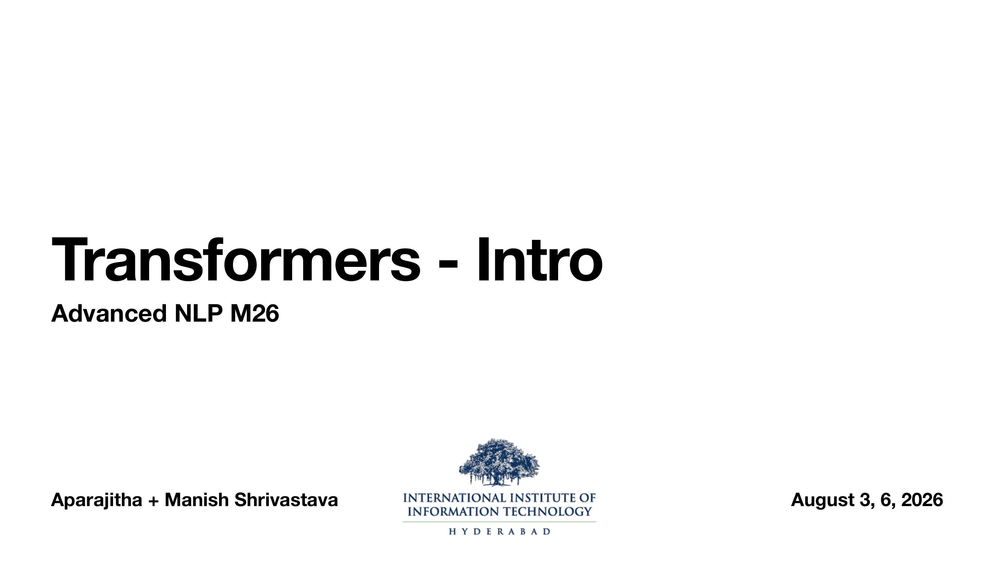
On the slide
Lecture 2 title card, Transformers, Intro, delivered across two class days, 3 and 6 August 2026, by Aparajitha Allamraju and Manish Shrivastava.
What it means
"Intro" is misleading. This is a 90-slide crash course covering everything from the definition of a derivative to a full encoder-decoder transformer. The reason it is labelled "intro" is that the rest of the course, nine lectures of transformer internals plus everything after, assumes you carry this deck in your head.
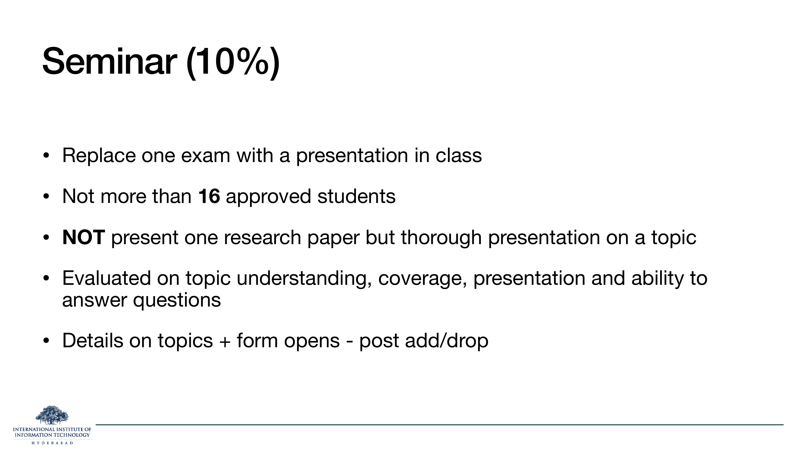
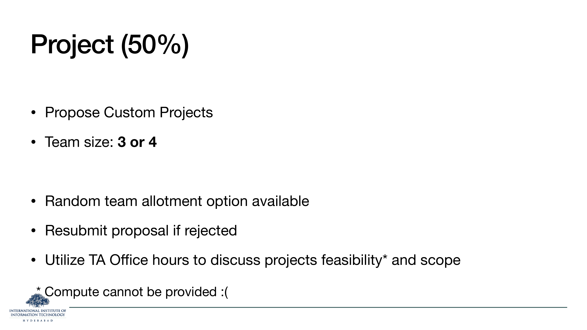
On these slides
Two administrative reruns from Lecture 1, the seminar option (worth 10%, up to 16 students, replaces one exam) and the project rules (50% of the grade, teams of 3 or 4, no institute compute). See §4 and §5 of Lecture 1 for the full breakdown.
Why it is here again
The instructor knows some students only turn up from Lecture 2 onwards. Anything that costs marks gets repeated in the second lecture as a courtesy.
Cross-reference: full logistics in Lecture 1.
§2Word representations, in one page
The lecture opens the technical content with a Recap divider and then one big slide summarising the evolution of word representations. This is fifteen years of NLP compressed into five bullets, so the density is deceptive. It is worth reading slowly.
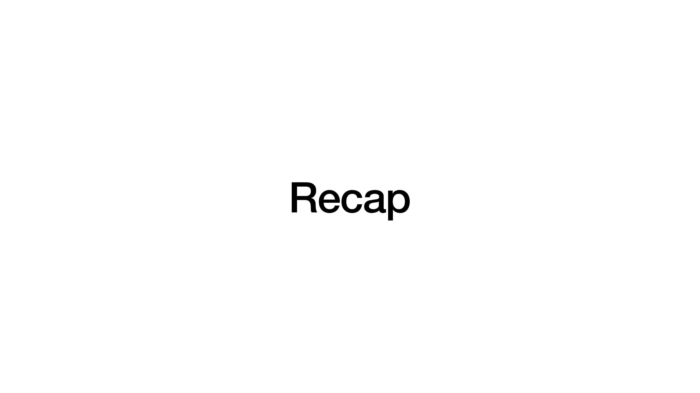
A one-word section divider. Everything until slide 12 or so is background you might already have, taught fast for anyone who does not.
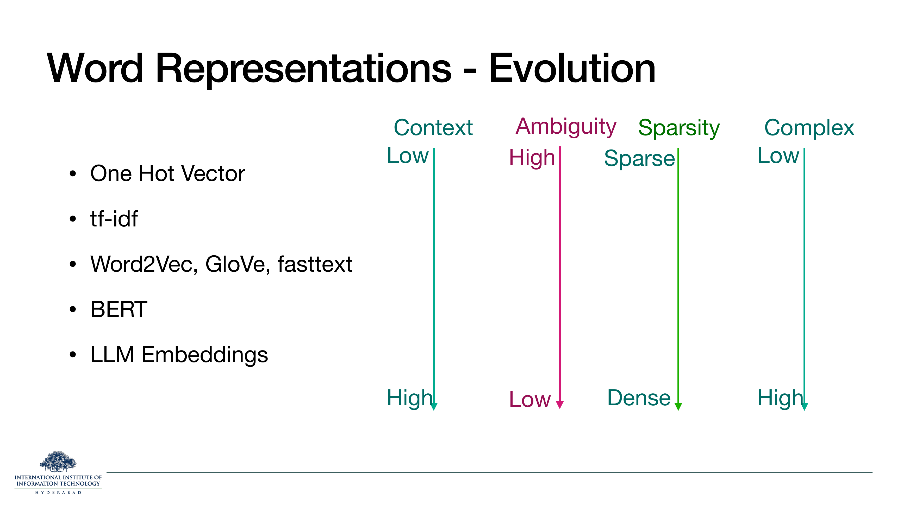
On the slide
Five ways to represent a word, ordered oldest to newest, with four axes on the right that shift as you descend the list.
- One-hot vector. A vector as long as the vocabulary, all zeros except a single 1 at the word's index. No context, maximum sparsity, maximum ambiguity (every sense of "bank" gets the same vector).
- tf-idf. Term frequency scaled by how rare the word is in the corpus. Still sparse, still context-free, but at least common words like "the" carry less weight.
- Word2Vec, GloVe, fastText. Dense vectors (typically 100 to 300 dimensions) learned so that words in similar contexts get similar vectors. Still one vector per word type, "bank" (river) and "bank" (finance) collapse.
- BERT. The vector for a word depends on its sentence. Two different uses of "bank" now get two different vectors.
- LLM embeddings. Same idea, bigger models, and the vectors are learned end-to-end on next-token prediction over web-scale text.
Read the four arrows on the right of the slide together. As we move down the list, representations get more contextual, less ambiguous, more dense, and more complex to train. Every step of the evolution buys context by paying complexity. That trade is the through-line of the whole course.
Lecture 3 on Tokenization zooms into the "what is a word" question this slide silently assumes. The Embeddings lecture zooms into Word2Vec / GloVe / fastText themselves.
§3Gradients & backprop, from scratch
Ten slides of calculus. The lecturer is not being nostalgic. Everything in the rest of the deck, every architectural choice, every normalisation trick, is motivated by how gradients flow through the network. If you cannot picture a gradient moving backwards through a matrix multiply, the transformer diagram will feel arbitrary. Read this section as the answer to the question "why does anything need to be added to a plain matrix multiply".
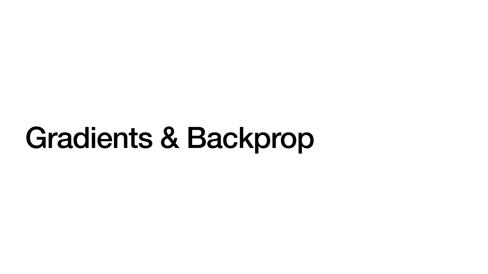
Section divider. From here through slide 15 the lecture rebuilds calculus, one derivative at a time, up to the operations you actually run inside PyTorch.
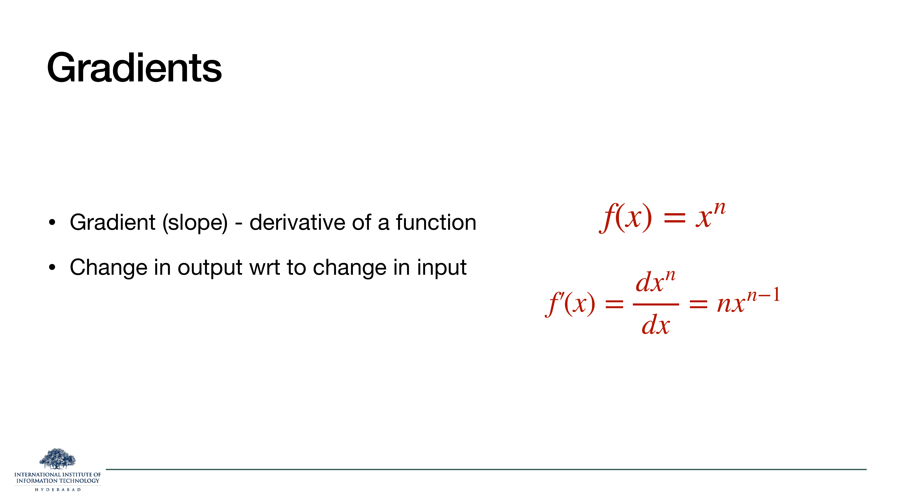
On the slide
A one-line definition: the gradient is the derivative of a function, the change in its output per unit change in its input.
What it means
For a scalar function like f(x) = xn, the derivative f'(x) = n xn-1 tells you the slope at any point. In a neural network the "function" is the loss and the "input" is a parameter. So the gradient answers: if I nudge this weight by a tiny amount, does the loss go up or down, and by how much?
Every training step is: (1) evaluate the loss, (2) compute the gradient of the loss with respect to every parameter, (3) move each parameter a small step downhill. The rest of this section is the machinery for step 2.
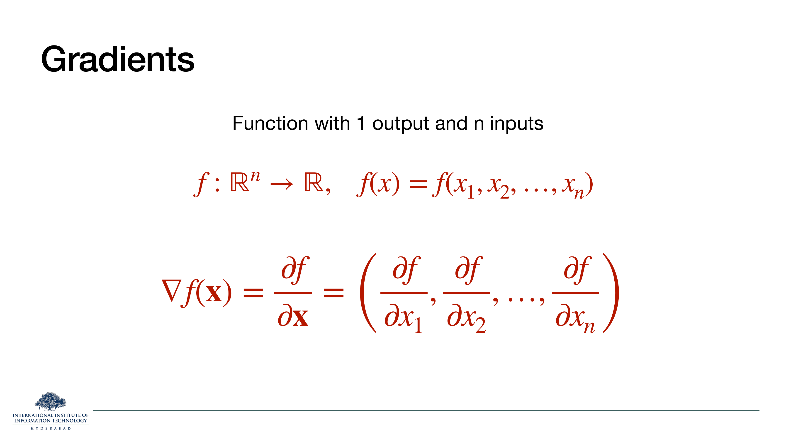
R. Gradient is a vector of partial derivatives ∂f/∂x_1, ..., ∂f/∂x_n.">On the slide
Same idea, but for functions of many variables. If f takes n inputs and returns one number, its gradient ∇f(x) is the vector of all n partial derivatives.
What it means
A neural network's loss depends on millions of parameters. The gradient is a vector of the same shape as your parameters: one number per weight, saying which way to push that weight. Gradient descent is literally "subtract a small multiple of this vector from your parameters".
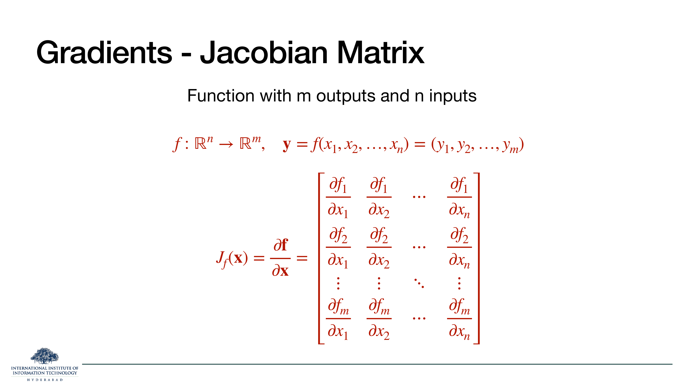
R^m. Jacobian is the m-by-n matrix of all partial derivatives ∂f_i/∂x_j.">On the slide
Now the function has many inputs and many outputs. The Jacobian Jf(x) is the m×n matrix whose (i,j) entry is the partial derivative of the i-th output with respect to the j-th input.
Why keep this in mind
Every layer of a neural network is a function from vectors to vectors. So its "gradient" is a Jacobian. Backpropagation is nothing more than repeatedly multiplying these Jacobians together via the chain rule, only, because the final output is a single scalar (the loss), the whole chain collapses back into a gradient vector at the end.
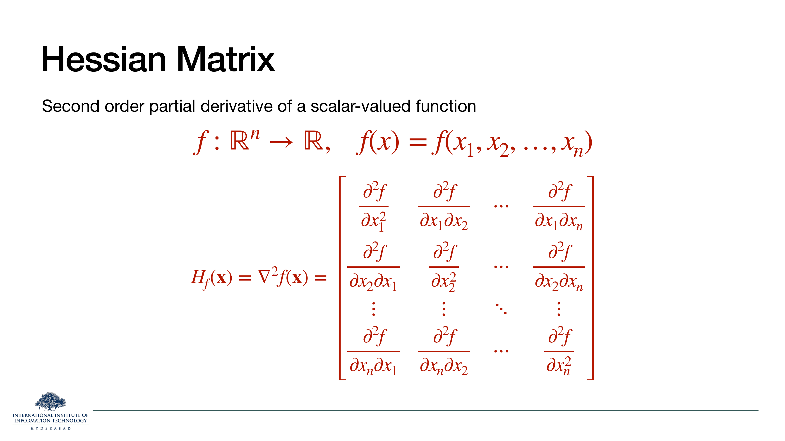
On the slide
The Hessian is the matrix of second partial derivatives. It tells you not just the slope but the curvature of the loss surface.
Why it matters in practice
Newton's method uses the Hessian to pick step sizes automatically. Modern deep learning almost never does this: a Hessian for a billion-parameter model is a billion-by-billion matrix, and just storing it is impossible. What optimisers like Adam do instead is estimate a cheap proxy for curvature from the running mean and variance of the gradient itself. But the Hessian is worth knowing exists, it is what "second-order optimisation" refers to and what algorithms like L-BFGS approximate.
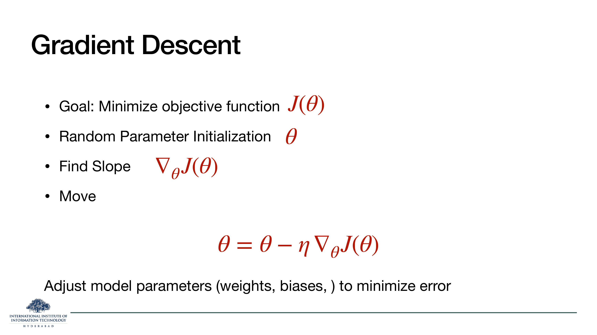
On the slide
The training loop in one equation: θ ← θ − η ∇θ J(θ). Initialise parameters randomly, compute the gradient of the loss, take a small step in the opposite direction, repeat.
What it means
The letter η ("eta") is the learning rate, how big a step to take. The letter J is a common name for the loss (older literature used it for the "cost function"; you will more often see L in modern papers). This is the entire recipe for training any model in the course.
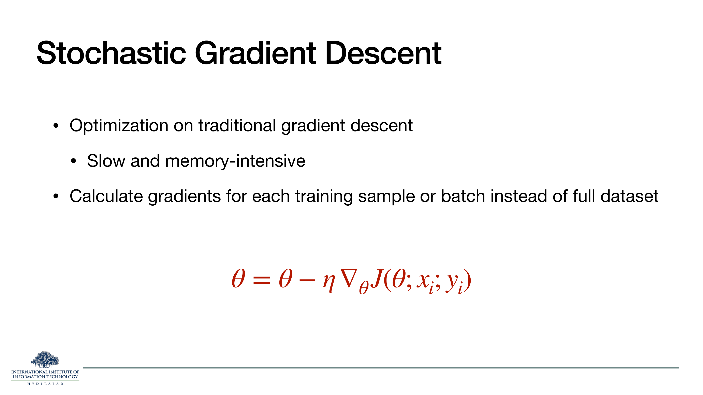
On the slide
The practical version: instead of computing the gradient over the entire dataset (impossible when the dataset is bigger than memory), estimate it from one sample or one mini-batch at a time.
What it means
Full-batch gradient descent is precise but glacial. Stochastic gradient descent (SGD) trades precision for speed: each step is noisy, but you get many, many steps per unit of compute. Every optimiser in the rest of the course, SGD, Adam, AdamW, Lion, is a variant of this idea with a smarter learning rate.
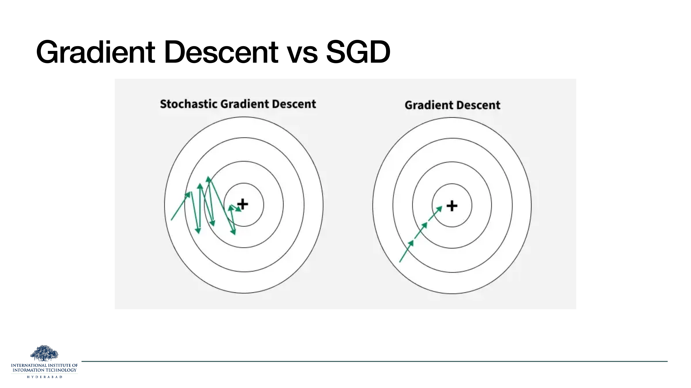
On the slide
Two loss contour plots. On the left, SGD's path zig-zags towards the centre because each step is based on a noisy gradient estimate. On the right, full-batch GD walks smoothly to the minimum.
The noise in SGD is not just a bug we tolerate for speed. It is a feature: the jitter helps the optimiser escape shallow local minima and saddle points that would trap a smoother trajectory. Deep-learning loss surfaces are full of saddle points; SGD's noise is what lets it keep moving.
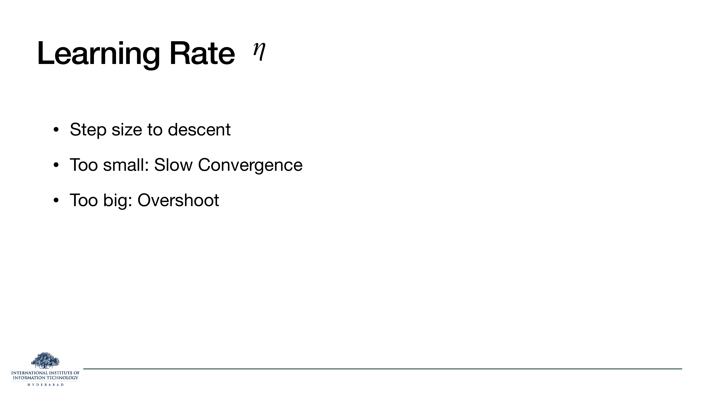
On the slide
The learning-rate trade-off. Too small and the loss barely moves per step; too large and each step overshoots the minimum and can diverge.
What it means
Picking η is one of the single most important knobs in deep learning. For transformers, the standard practice is a warmup + decay schedule: ramp up from zero over a few thousand steps, then decay. We will meet the schedule again in §9.
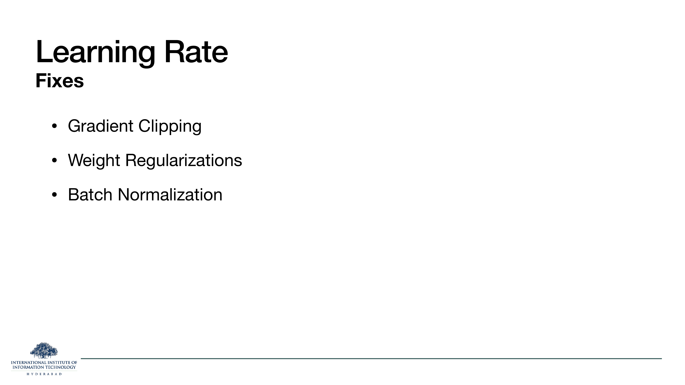
On the slide
Three tricks that let you use a larger, more aggressive learning rate without blowing up.
- Gradient clipping caps the norm of the gradient vector, so one anomalous batch cannot send weights to infinity.
- Weight regularisation (L1, L2, weight decay) penalises large weights, which keeps the loss surface flatter and better conditioned.
- Batch normalisation rescales activations so successive layers see inputs of similar magnitude, a stabiliser we will revisit as layer norm in the transformer.
Layer norm and RMSNorm both live inside every transformer block. See §8 for how they wire in.
§4Backpropagation, the picture
Six slides on the mechanic that actually computes those gradients: forward pass, backward pass, then a hand-drawn chain of hidden states that walks the loss gradient right back to the first layer. The last slide in this run, the product of Jacobians, is the seed of the vanishing-gradient problem that will motivate attention two sections later.
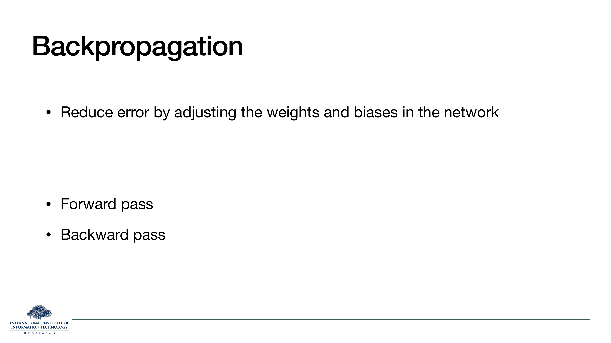
On the slide
Training a network alternates between a forward pass (feed the input through, compute the loss) and a backward pass (propagate the gradient of the loss back to every parameter).
What it means
Backpropagation is not a new algorithm on top of the chain rule, it is the chain rule, applied to a computation graph in reverse. The name is 40 years old (Rumelhart, Hinton, Williams, 1986); everything since has been engineering.
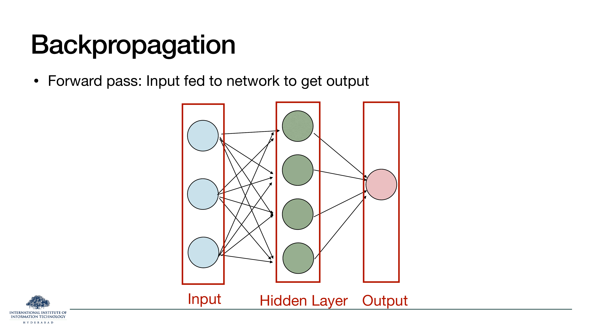
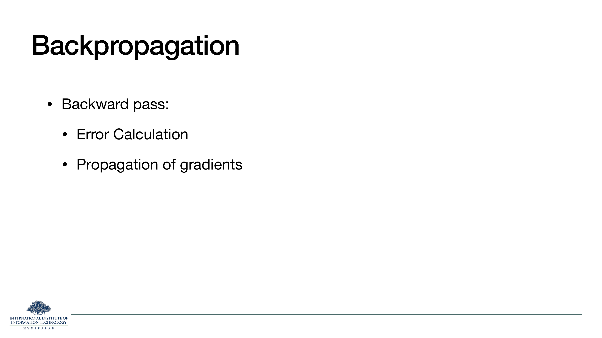
On these slides
The two halves of a training step. Forward: multiply the input by the weights layer by layer to produce a prediction. Backward: compute the error (prediction minus target), then propagate that error backwards through the same weights, accumulating a gradient for each parameter along the way.
In PyTorch: the forward pass builds a graph, loss.backward() walks it in reverse and fills
in .grad on every tensor. That is literally the API the two slides describe.
On the slide
A chain of hidden states h1, h2, h3, h4 with the same weight matrix Wh between each pair. The loss L sits at the end. The red arrows show the gradient of the loss flowing backwards to h1.
Why the shared weights matter
Reusing the same Wh across time steps is the picture of a Recurrent Neural Network unrolled. It is also why RNNs have so few parameters compared to their depth, and, as the next slide makes explicit, why they struggle to train.
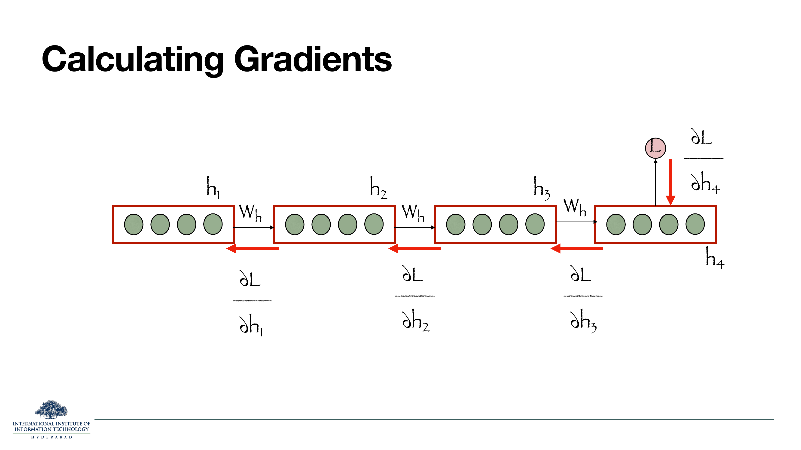
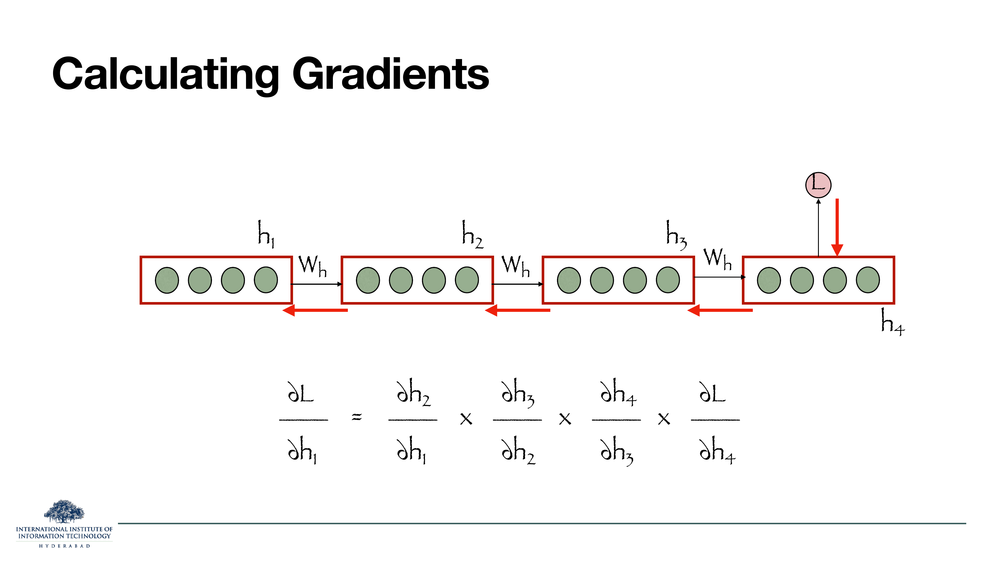
On these slides
Slide 20 labels every intermediate gradient in the chain. Slide 21 writes out the reason: the gradient at the first layer is the product of all the intermediate Jacobians times the gradient at the loss.
Read that formula and ask: what happens if each of those Jacobians has entries smaller than 1? The product shrinks exponentially. If they are larger than 1, it explodes. This is the vanishing / exploding gradient problem, the single reason plain RNNs cannot learn long-range dependencies, and the reason the transformer's shortcut connections were invented. Hold this picture in your head; the entire next section is a reaction to it.
§5Neural nets in NLP, and what broke
Fifteen slides on the pre-transformer world. The lecture uses the RNN as a foil: it walks you through the RNN language model, names the three ways it fails (finite context, long-distance dependency, no parallelism), gives you five kinds of linguistic dependency that break its back, then shows the LSTM as the partial fix that dominated NLP from 2015 to 2017. All of it exists so the next section can say "and then attention just replaced this whole picture".
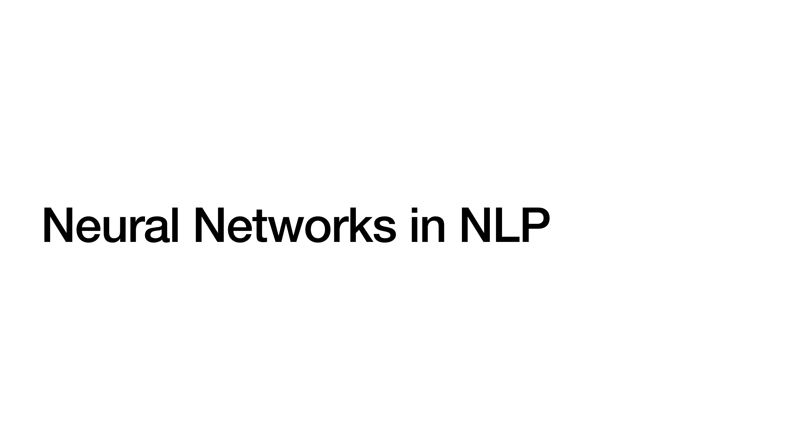
Section divider. From here the lecture stops teaching calculus and starts building the actual neural architectures NLP used before transformers.
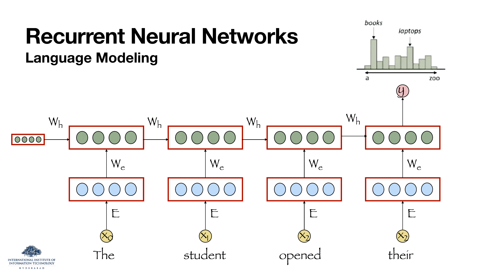
On the slide
The classic Recurrent Neural Network language model, unrolled over the sentence "The student opened their ___". Each token xi becomes an embedding via matrix E, is projected by We into a hidden state, and combined with the previous hidden state via Wh. The final hidden state produces a distribution y over the next word.
What it means
The whole sentence's context is compressed into one fixed-size hidden vector before you ever predict a word. The same Wh is reused at every step; that is what "recurrent" means. This is elegant and it works, but the next four slides list what it cannot do.
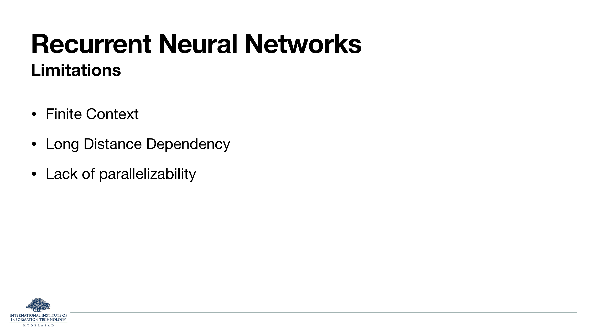
On the slide
Three fatal weaknesses of the RNN, and every one of them is a headline problem the transformer will need to solve.
- Finite context. Everything the model knows about the past is squeezed into one fixed-size vector.
- Long-distance dependency. Words far back in the sentence have almost no influence on the current prediction (this is the vanishing gradient again).
- Lack of parallelisability. To compute ht you must first compute ht-1. A GPU cannot help you here, the recurrence is inherently sequential.
Item 3 is the one that ends up mattering most. The transformer will accept a bigger parameter count and more FLOPs per token, but it can do them all in parallel. In the GPU era, "trainable in a week" beats "elegant but sequential" every time.
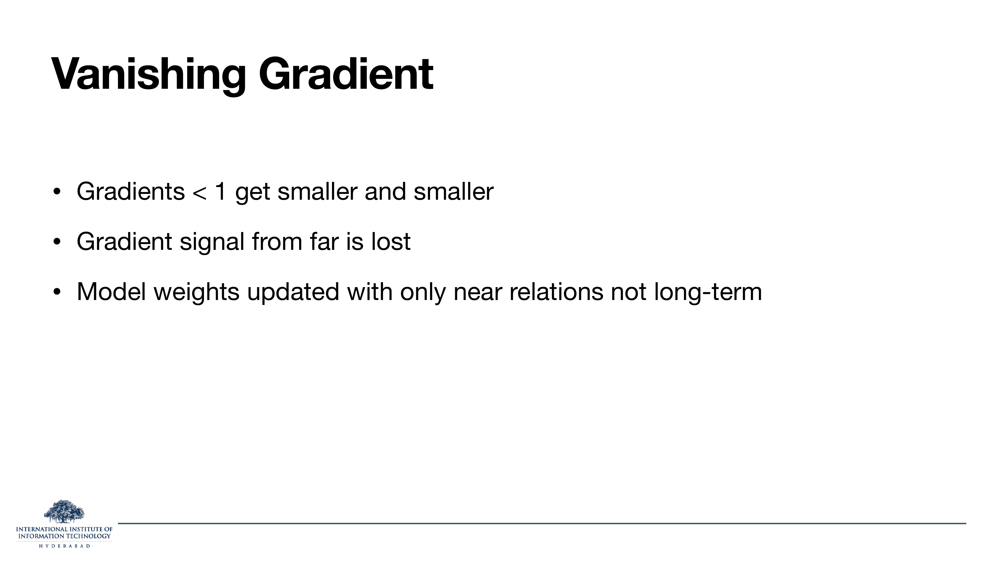
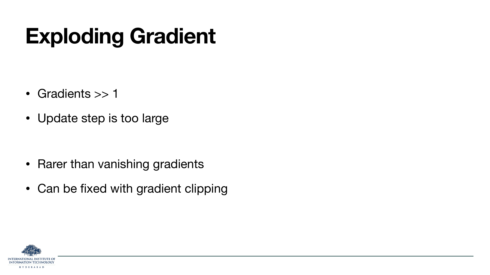
On these slides
Two sides of the same coin. The product of Jacobians we wrote in §4 is a game of exponents: if factors are smaller than 1 the gradient vanishes to zero, if they are larger than 1 it explodes to infinity.
Consequences
A vanishing gradient means the model can only learn from words a few tokens back, the very long-distance dependencies (slides 33 and 34, coming up) never train. An exploding gradient sends the update step to infinity and blows the loss up. The vanishing case has no cheap fix; the exploding case does, clip the gradient norm at every step.
A brief interlude, five slides on why long-distance dependencies actually matter for language, not just as an abstract complaint about RNNs.
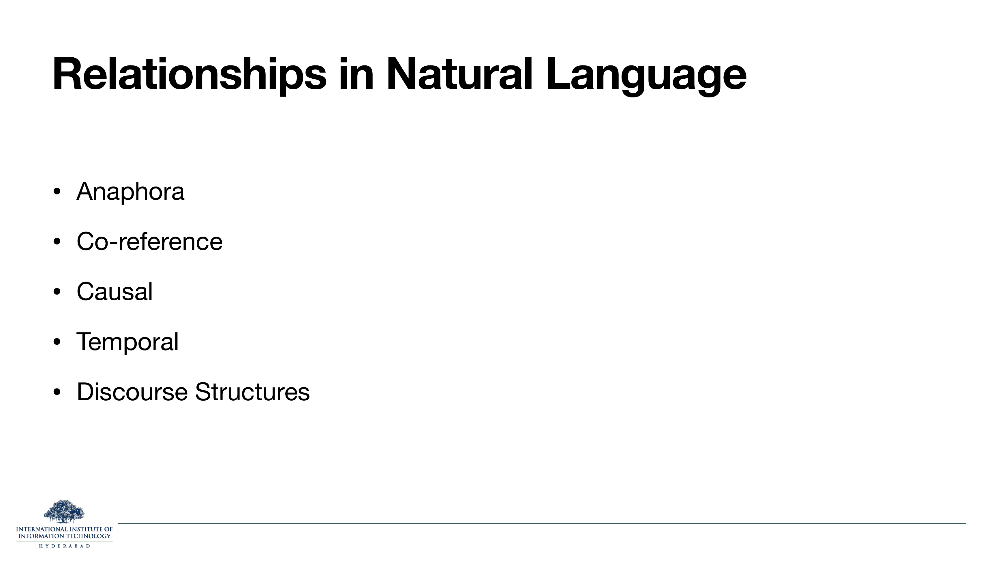
On the slide
Five kinds of long-range structure that a language model must handle to be any good.
- Anaphora: a pronoun refers back to something already said.
- Co-reference: two mentions in a text refer to the same entity.
- Causal: one event caused another.
- Temporal: one event happens because of, or after, another.
- Discourse structures: larger organisational patterns (topic, contrast, elaboration).
The next four slides give one worked example of each of the first four.
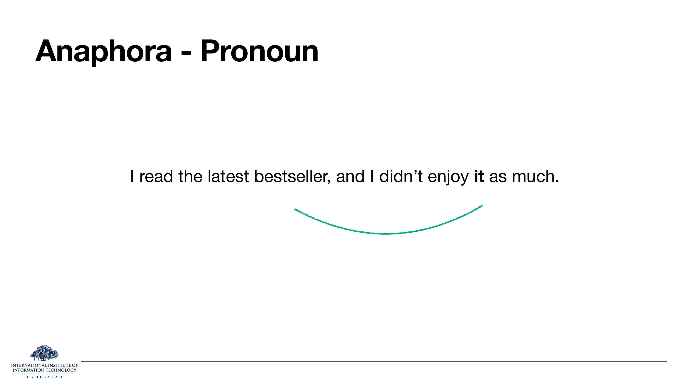
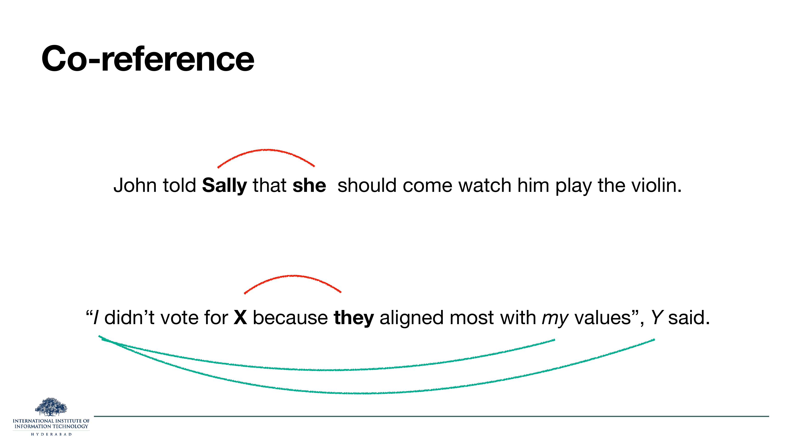
On these slides
Anaphora: the pronoun "it" points back at "the latest bestseller". Co-reference: the pronoun "she" refers to "Sally"; and in the more tangled second sentence, the "I" and "my" inside the quote both refer back to "Y" outside it.
The second example on slide 30 is a warning shot: the referent can sit outside the quoted span, and any model that scans linearly (an RNN) will find that hard. It is easy for self-attention, which can jump directly to "Y" from inside the quote. Hold that in mind when we meet attention in §6.
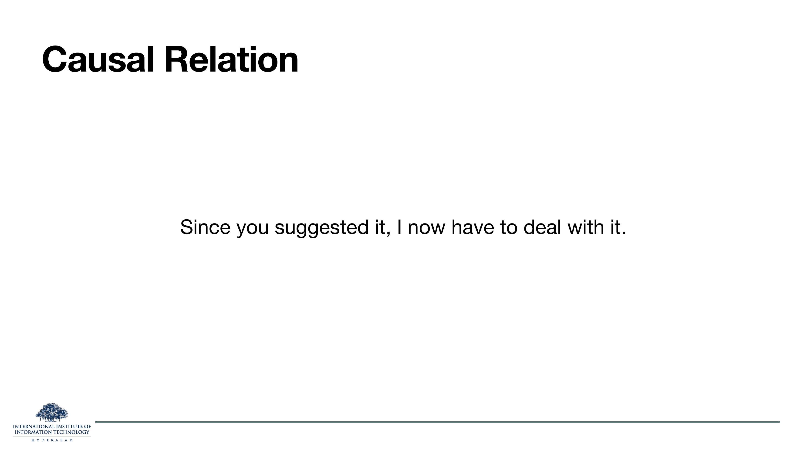
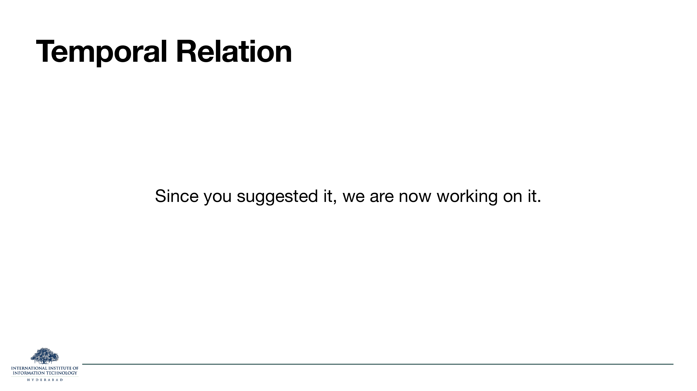
On these slides
The same conjunction "since" doing two completely different jobs: on slide 31 it introduces a cause ("because you suggested it…"); on slide 32 it introduces a time ("from the moment you suggested it…").
Same surface form, different meaning. The only way to tell them apart is to read the whole clause after "since" and pattern-match against causal versus temporal cues. A model that can only summarise the past into one fixed vector will miss the distinction; a model that can reach back and attend to the specific words that follow can catch it.
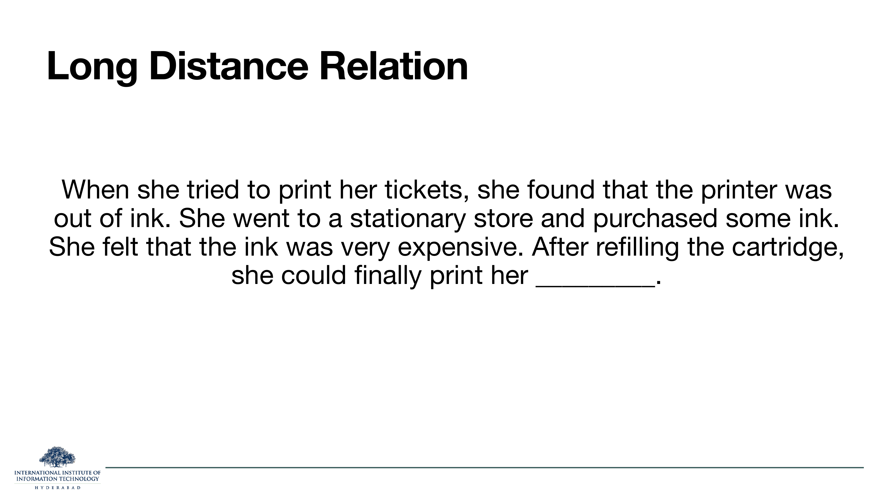
On these slides
Two fill-in-the-blank paragraphs where the answer sits far back in the text.
- Slide 33: the missing word is tickets, introduced in the very first clause, and never repeated. Every sentence in between is about ink.
- Slide 34: the missing word is Spanish, you need to remember "grew up in Spain" from the first sentence, even though the paragraph then wanders through the UK, Patagonia and Peru.
Both examples are trivial for a fluent reader. Both are hard for an RNN whose gradient signal from that opening clause has already vanished by the end.
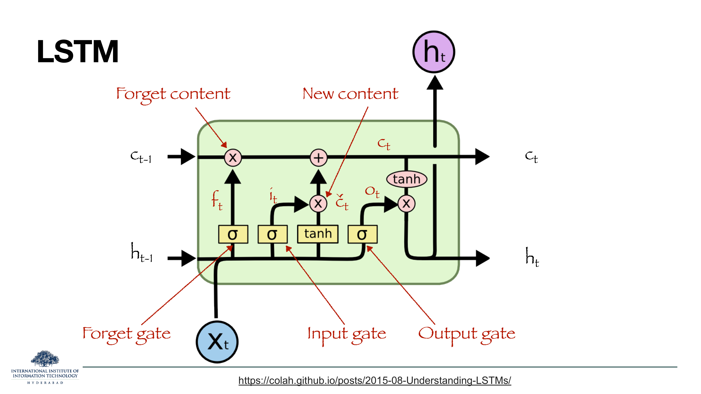
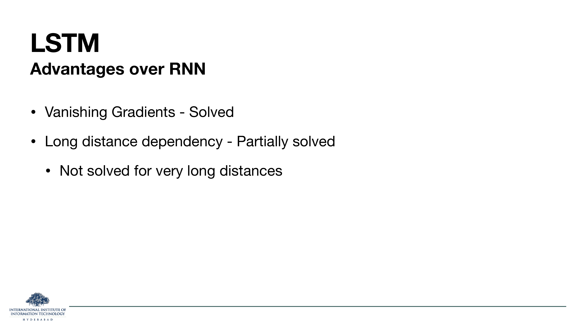
On these slides
The famous Chris Olah LSTM diagram, and the honest scorecard. The LSTM adds a cell state ct that flows through the sequence almost untouched, plus three sigmoid gates: a forget gate that decides how much of the old cell state to keep, an input gate that decides how much of the newly-computed candidate to add, and an output gate that decides how much of the cell state to expose as the hidden state.
Why does this fix vanishing gradients? Because the cell state is passed forward via addition, not repeated multiplication. Additive updates give the gradient a straight path back to the beginning of the sequence. No more exponential decay.
Why it isn't the end of the story
Slide 36 is honest: LSTMs partially solve long-distance dependency. They still process one token at a time, so the parallelism problem remains, and for really long documents (a hundred sentences apart) their memory still degrades. This is the door the transformer walks through.
§6Attention as the fix
Nine slides. First the lecture closes the LSTM chapter with its residual limitations, then it walks Bahdanau attention (2015) through a three-word machine-translation example, one output token at a time. This is the moment the deck turns: the same attention gadget you see wrapped around an RNN here becomes the entire model in the next section.
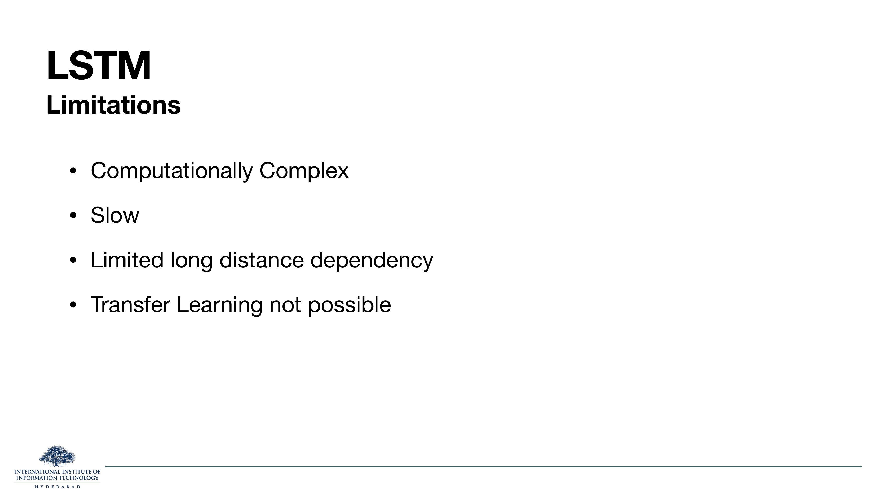
On the slide
Four remaining problems the LSTM cannot fix. It is computationally complex (four gates means four matrix multiplies per token), it is slow (still sequential in time), long dependencies degrade past a few dozen tokens, and there is no clean recipe for transfer learning: you cannot easily pretrain a giant LSTM on the web and then fine-tune it on your task.
The transfer-learning point is what BERT and GPT eventually solved, and they could only do it because the architecture underneath (the transformer) is parallelisable at pretraining scale.
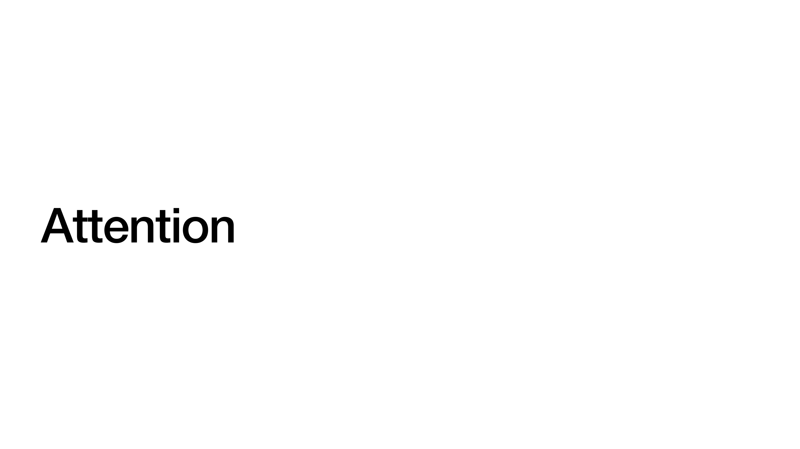
Section divider. Everything from here is about attention, from its Bahdanau-2015 origins to full self-attention.
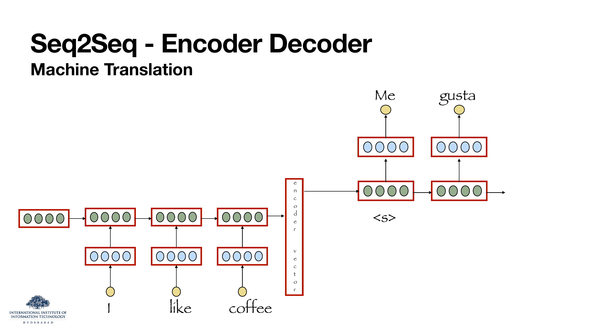
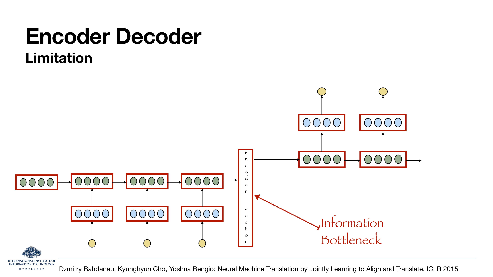
On these slides
The pre-attention seq2seq model for machine translation (Sutskever, Vinyals & Le, 2014): an encoder RNN reads the source sentence "I like coffee" and squeezes it into a single fixed-size encoder vector; a decoder RNN then generates the target "Me gusta el café" from that vector.
Every last drop of information about the source has to fit into that one vector. A 20-word sentence, a 200-word sentence, a whole paragraph, all the same size. This is the "information bottleneck" the arrow on slide 40 is pointing at, and it is exactly what Bahdanau, Cho and Bengio (ICLR 2015) proposed to fix.
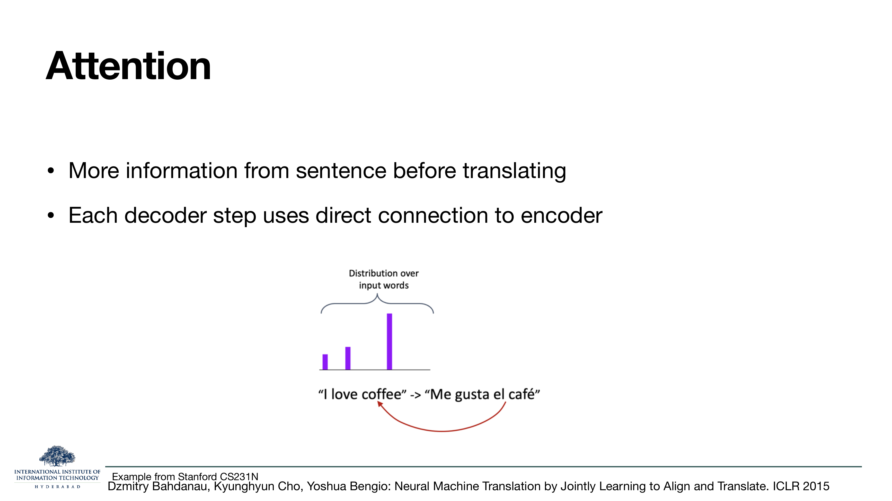
On the slide
The pitch. At every decoder step, instead of relying only on the summary vector, the decoder looks back at all the encoder hidden states and takes a weighted combination of them, with the weights (the attention distribution) computed on the fly.
What it means
The decoder gets to choose, at each output word, which source words to focus on. Producing "café" attends heavily to "coffee"; producing "Me" attends to "I". No single vector has to remember the whole sentence, because the whole sentence is still there for the decoder to look at.
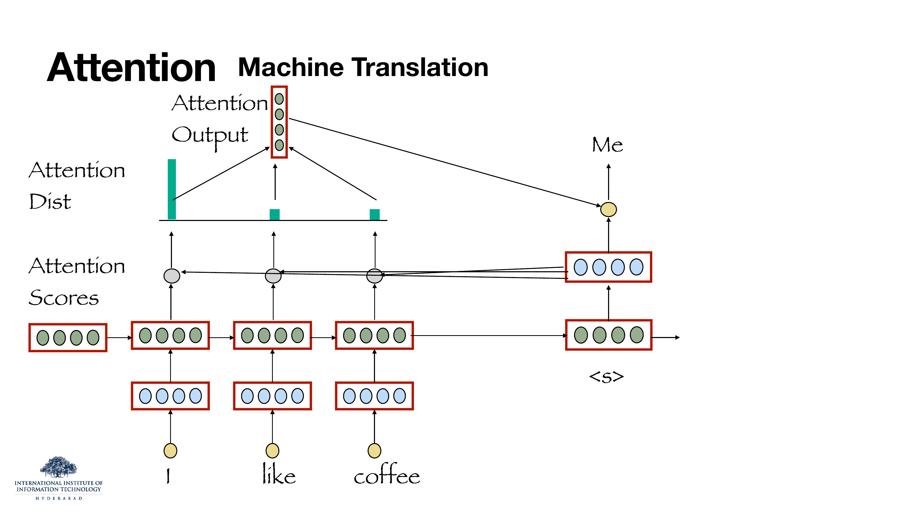
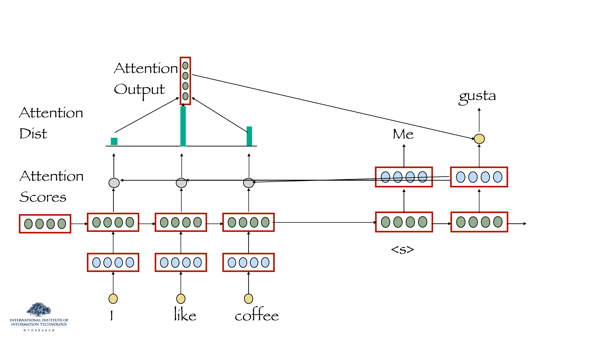
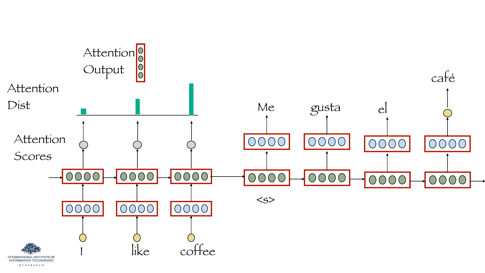
On these slides
Three snapshots of the same decoding, at different output positions. At each step:
- The decoder state is compared against every encoder state to produce attention scores.
- Those scores are softmaxed into an attention distribution.
- The distribution is used to weight-sum the encoder states, producing an attention output.
- The attention output is concatenated with the decoder state and used to predict the next word.
The attention distribution changes at every output token; that is why we see three different peaked bar charts in three consecutive slides. Same encoder, same decoder, different soft look-ups.
Watch what the attention distribution is doing on slide 44. It peaks on "coffee" when producing "café". Nobody told it to. It learned it from data. This is where the "attention as soft alignment" intuition comes from, and why classical machine-translation alignment tables became obsolete overnight.
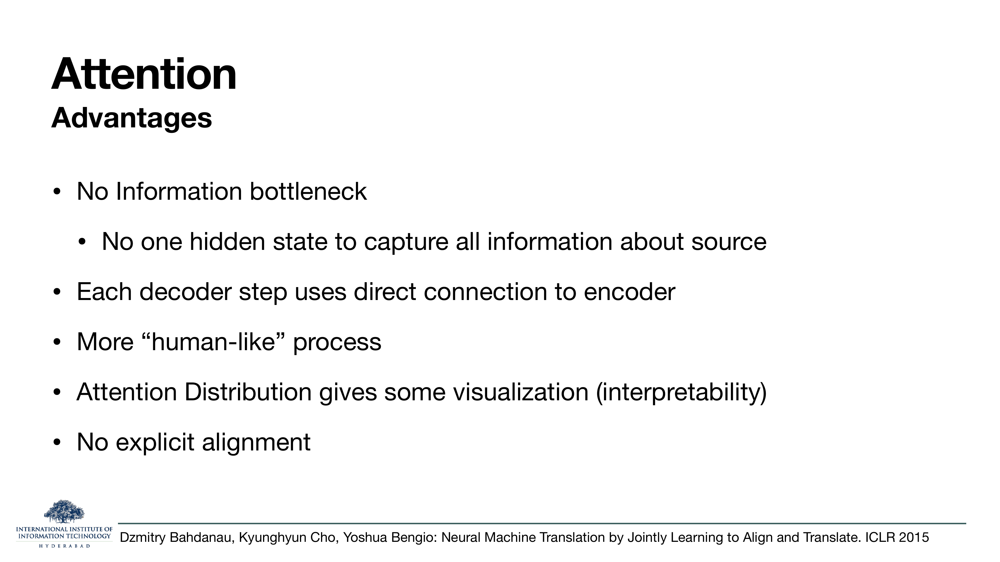
On the slide
Five wins over plain seq2seq. The first two are the mechanical fix (no bottleneck, direct source access). The third is the intuition ("humans do not read a whole sentence into a single vector before translating either"). The fourth is a big deal in practice, attention weights can be plotted as a heatmap and give you a rough visualisation of what the model is looking at. The fifth is the surprise: statistical machine translation before this had a whole subfield on learning explicit word alignments; attention gets alignment for free as a byproduct.
§7Self-attention and multi-head
Twenty slides. The lecture takes the attention gadget from the last section, throws away the RNN it was wrapped around, and asks: what if we let a sequence attend to itself? What follows is the entire transformer machinery, one operation at a time, embeddings, then queries/keys/values, then the attention matrix, then multi-head, then the scorecard against RNN. By slide 65 you have the "Attention is All You Need" paper's centrepiece.
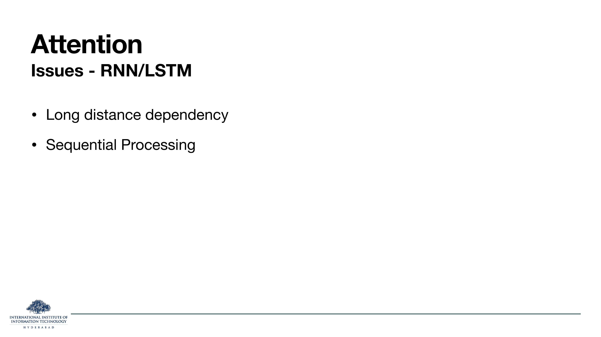
On the slide
A summary of what attention could not fix when it was still bolted onto an RNN. The RNN underneath still runs sequentially and still degrades on very long dependencies. To get rid of both we need to get rid of the RNN.
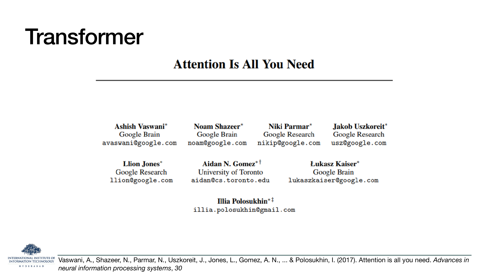
On the slide
The title page of Vaswani et al., Attention Is All You Need (NeurIPS 2017). Eight authors, all at Google.
Read the title as a claim. It says: given attention, you do not need a recurrence at all. Every part of the RNN that attention was patching over, the encoder, the decoder, the recurrence in between, can be replaced by more attention. The rest of the deck spells out how.
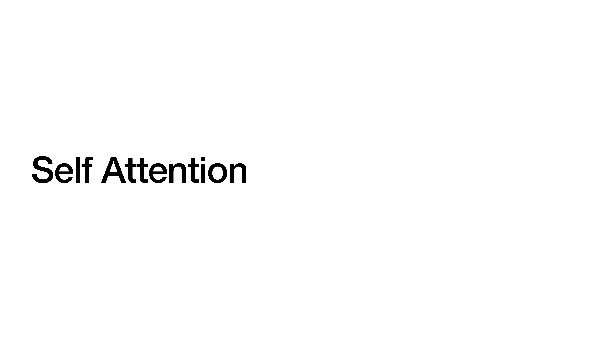
Sub-divider. From here through slide 65 we build self-attention step by step.
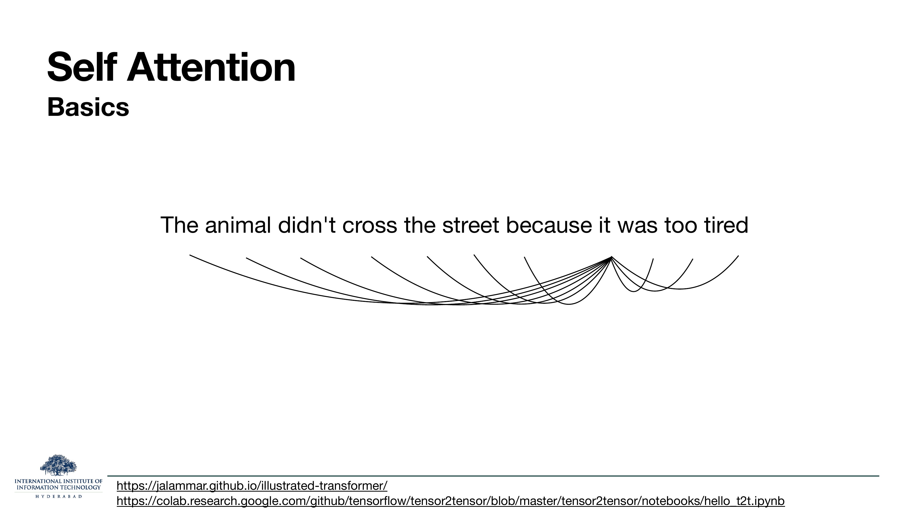
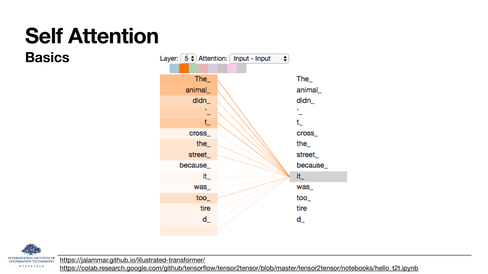
On these slides
The core idea of self-attention: within a single sentence, let every position attend to every other position. Slide 49 draws the arcs; slide 50 shows what a trained transformer actually does on the sentence "The animal didn't cross the street because it was too tired". The token "it" learns to attend heavily to "the animal", the model has silently resolved an anaphora with no explicit supervision.
Compare this to the arcs on slide 29. What was called "anaphora" back there and demanded a special linguistic algorithm is here just what one of the attention heads at layer 5 does for free.
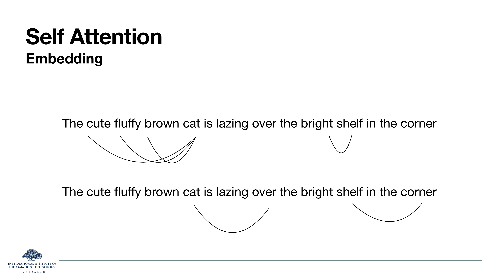
On the slide
The intuitive job description for self-attention. The word "cat" starts life as a plain type-level embedding; after one self-attention layer, its representation has soaked up "cute", "fluffy" and "brown" (the adjectives that modify it). Meanwhile "shelf" absorbs "bright" and "corner".
Why this matters
This is exactly the "contextual embedding" property that Word2Vec did not have and BERT did. Self-attention is the How it works that turns a static word embedding into a sentence-dependent one.
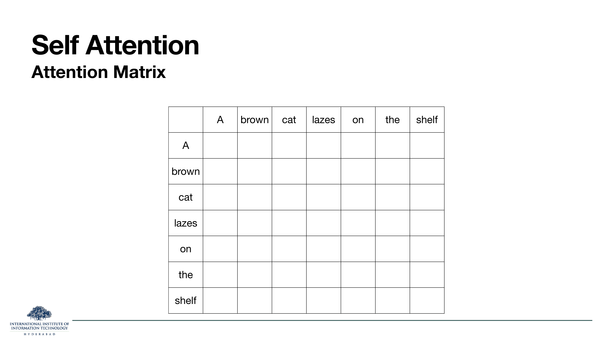
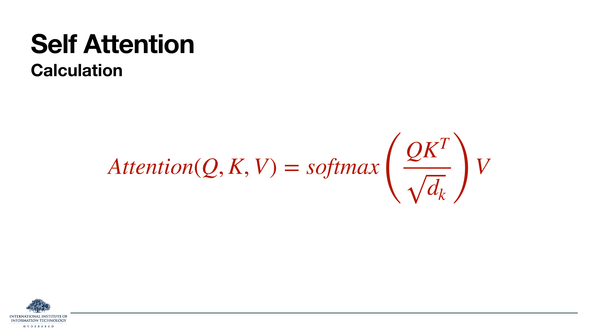
On these slides
The bookkeeping. Slide 52 sets up an n×n matrix where each cell says "how much should the row-token attend to the column-token?" Slide 53 gives the one equation that fills it in:
Three inputs, queries Q, keys K, values V, and one scalar hyperparameter dk, the key dimension. Compute pairwise dot products between queries and keys, scale down by √dk, softmax across the row, then use those weights to average the values.
The scale factor √dk is not cosmetic. Without it, large key dimensions give dot products with huge variance, which push softmax into saturated regions where its gradient is tiny. Dividing by √dk keeps the pre-softmax scores at unit variance and gradients healthy.
On these slides
Three snapshots of the same construction. Each token starts as an embedding Ei. Three learned linear projections, WQ, WK, WV, turn that one embedding into three role-specific vectors:
- Query qi: "here is what I am looking for."
- Key ki: "here is what I contain."
- Value vi: "here is what I will hand over if I get picked."
The database analogy is exact: a query is compared against every key, the resulting scores decide who wins, and the winner's value is returned. Only softer, instead of one winner we take a weighted average of all values.
On these slides
The formula on slide 53, worked column by column for the query q3 (the word "cat"). Slide 57 fills the column with scaled dot products. Slide 58 softmaxes them into a distribution (numerical example: 0.38 on "brown", 0.48 on "cat" itself, 0.08 on "lazes", small mass elsewhere). Slide 59 uses that distribution to weight-average the value vectors.
Read the numbers on slide 58 carefully. The output representation for "cat" ends up as roughly 0.48 × v(cat) + 0.38 × v(brown) + a smaller piece of v(lazes). That is precisely what "the embedding of cat should absorb the adjectives that modify it" looks like in code.

On these slides
The same operation as a matrix multiply. X is an n×dembed input (all tokens stacked as rows). Three projection matrices WQ, WK, WV take X to Q, K, V. The whole self-attention layer is now three matrix multiplies, one softmax, and one more matrix multiply. Every step is a single GPU kernel, and every position is computed at the same time.
This is why the transformer is fast. Compare with an RNN: n sequential steps, each depending on the previous one. Self-attention: two matrix multiplies, no sequence. The trade is that the attention matrix has n×n entries, so cost is O(n2×d). For short-to-medium sequences that is a win; for very long ones it is the pain point the "More Attention" lecture will address.
On the slide
The transformer runs attention h times in parallel (the paper picked h=8); each head has its own WQ, WK, WV triple. Every head produces its own output matrix Zi. Those matrices are concatenated along the feature axis and passed through a final output projection WO.
Why multiple heads
One attention distribution can only pay attention to one kind of relationship at a time. If it is busy resolving "it → animal", it cannot also be tracking "cross → street". Multiple heads let the layer represent many relationship types simultaneously at the same layer, each in its own low-dimensional subspace.
On these slides
The two figures from the paper. Slide 63 zooms in on one head; note the optional attention mask added before the softmax, which is how the decoder gets to hide future tokens from itself during training. Slide 64 stacks h of those heads, concatenates, and applies the output projection WO.
The mask is just a matrix of the same n×n shape as QKT, with a value of −∞ wherever you want to hide a position and 0 elsewhere. Adding −∞ before the softmax makes that cell exactly zero afterwards. In a causal (decoder-side) transformer, the mask is upper-triangular: every position is blocked from looking at future positions.
On the slide
The scorecard. Self-attention wins on all three axes that killed the RNN.
- Computational complexity per layer. O(n2 d) for self-attention vs. O(n d2) for an RNN. Self-attention is faster whenever n < d, which is the regime almost every serious deep model runs in.
- Parallelisation. Every position is a matrix-multiply row, computable in parallel. No unrolled loop.
- Long-distance dependency. Any two positions are one attention hop apart. No gradient product to vanish.
The one thing self-attention does not do out of the box is know about order. The next section fixes that.
§8Position, non-linearity, masking, block
Ten slides. Now that we have raw self-attention, the deck lists what is still missing and adds one small piece at a time until the picture matches Figure 1 of the paper. Positional encoding for order, the feed-forward network for non-linearity, causal masking for the decoder, and finally residual connections plus layer norm so the whole thing trains.
On the slide
Three problems with raw self-attention.
- No word position. Swap "dog bites man" for "man bites dog" and every attention score stays the same, the model is permutation-invariant.
- No non-linearity. Self-attention is a weighted sum of linear projections. Stacking pure attention layers still gives you a linear function.
- Looks at future words. A language-model decoder must not see word t+1 when predicting word t. Vanilla self-attention peeks freely.
Slides 67 through 71 address each of these in turn.
On these slides
The sinusoidal positional encoding from the paper.
Each position pos gets a vector the same size as the token embedding, made of sines and cosines at geometrically decreasing frequencies. That vector is added to the token embedding before it enters the first attention layer.
Why sinusoids? Because sin(a+b) and cos(a+b) can be written as linear combinations of sin(a), cos(a), sin(b), cos(b). So the model can learn a linear operator that says "shift by k positions", and that operator will work for any k, including k's longer than any position seen during training. That is the "extrapolate to longer sequences" claim on slide 68.
Slide 69 is the visualisation everyone remembers: 20 positions on the vertical, 512 embedding dims on the horizontal, sines on the left half of the vector, cosines on the right, frequencies falling as you go right. Each row is a unique fingerprint for that position.
Modern transformers usually replace sinusoidal PE with RoPE (rotary position embeddings) or ALiBi. See the "positional encoding" lecture later in the course. But sinusoids remain the textbook default and are still what LLaMA-style diagrams draw.
On the slide
The fix for "no non-linearity": after every attention layer, add a small position-wise feed-forward network, a two-layer MLP applied independently to every token, with a ReLU (or GeLU) in the middle.
This is where most of the parameter count of a modern transformer actually lives, the FFN's hidden dimension is typically 4× the model dimension.
On the slide
The fix for "looks at future words". In the decoder, before the softmax, we add a matrix that is 0 on the lower triangle and −∞ on the upper triangle. After softmax those −∞ entries become zero, so no position can attend to a later one.
This is called causal masking. It is the one architectural difference between an encoder-only model (BERT, no mask, every position sees every other position) and a decoder-only model (GPT, causal mask, each position sees only its predecessors).
On these slides
Everything from the last five slides, wired into a single block. The encoder block: input embedding + positional encoding, then N repetitions of (multi-head self-attention → Add & Norm → feed-forward → Add & Norm).
The decoder block adds two things: (a) the first attention sublayer is masked, and (b) a second attention sublayer sits on top, which is cross-attention: its queries come from the decoder, but its keys and values come from the encoder output. That is how the decoder actually reads the source sentence.
The Bahdanau attention from slides 41-44 is exactly the cross-attention sublayer on slide 73. What was a bolt-on to the RNN in 2015 is now one of three attention sublayers per decoder block. The transformer did not invent attention, it noticed you could use it everywhere.
On these slides
Slide 74 is Figure 1 of Attention Is All You Need: encoder on the left, decoder on the right, cross-attention arrows in the middle. This is the diagram of the field. Being able to redraw it from memory is one of the things this whole deck is training you to do.
Slide 75 zooms in on the two yellow "Add & Norm" boxes that appear all over the diagram.
- Residual (skip) connection: the sublayer's output is added to its input. This gives the gradient a shortcut path all the way back to the first layer. Without residuals, transformers deeper than a few layers do not train at all.
- Layer normalisation: inside each token vector, rescale to zero mean and unit variance, then multiply by learned gain and add learned bias. This keeps activations in a well-behaved range as they pass through many layers.
Layer norm normalises across the feature dimension of one token, not across the batch (that is batch norm) or across positions (that is instance norm). Because it never mixes information between positions, it plays cleanly with variable sequence lengths, which is precisely what sequence models need.
§9The transformer, seen whole
Nine slides. The lecture zooms out and asks: given the block we just built, what actually flows through it, what does each parameter cost us, and where does the architecture still hurt? This is the section where you get a feel for the shape of a modern transformer: the tensors, the parameter counts, the trade-offs the next nine lectures will attack.
On the slide
Two loss landscapes for ResNet-56, from Li et al. 2018. Without skip connections the loss surface is a chaotic mountain range full of sharp peaks and saddles; with them it is a smooth bowl with a single global minimum.
This picture is why the "Add" in "Add & Norm" is not decorative. Residual connections do not just help gradients flow, they geometrically reshape the loss surface into something an optimiser can actually walk down. Take them out and a 100-layer transformer would not train.
On the slide
The three places attention appears in a full encoder-decoder transformer.
- Encoder self-attention: every source token attends to every source token.
- Encoder-decoder (cross) attention: each decoder token attends to every encoder token.
- Masked decoder self-attention: each decoder token attends to prior decoder tokens only.
Same equation, different Q/K/V sources and different mask.
On the slide
The exact wiring of cross-attention: queries come from the decoder, keys and values come from the encoder's output. This is what lets the decoder "read" the source.
Cross-attention is not just for translation. It is the How it works behind any two-tower model: an image encoder feeding a text decoder (image captioning), an audio encoder feeding a text decoder (speech-to-text, Whisper), a retrieved-document encoder feeding a generator (Fusion-in-Decoder). Learn the pattern once, use it everywhere.
On these slides
Five wins, two pain points. Slide 79 lists the wins:
- Parallel processing at training time (the reason "train on the whole internet" ever became feasible).
- Semi-supervised learning and transfer learning: pretrain on next-token prediction, fine-tune on anything.
- Knowledge stores: the FFN layers act as key-value memory, storing facts.
- Reasoning: chain-of-thought and its descendants exploit the depth of attention layers.
Slide 80 names the two open wounds: (1) the attention matrix is O(n2) in sequence length, and (2) positional encoding is a bolt-on that never quite settles.
On these slides
The two open problems in slide 80, each with a shopping list of research responses.
- Position: learned, relative, absolute, RoPE (rotary position embeddings, the LLaMA default), and even NoPE (no positional encoding at all, letting causal masking do the work).
- Attention efficiency: sparse attention (only compute a subset of the matrix), grouped-query attention (share K/V across heads, LLaMA-2, Mistral), multi-head latent attention (DeepSeek-V2's trick), log-linear and linear attention (algorithmic escapes from the n2 cost).
Every one of these gets its own lecture later: More Attention covers sparse, grouped-query, and Flash Attention; the positional-encoding lecture covers RoPE and NoPE; the alternate-architectures block covers state-space models as the more radical version of "linear attention".
On these slides
Slide 83 is a bookkeeping picture: given hidden dimension d, key dim dq, h heads and vocabulary size V, every weight matrix has a specific shape. Slide 84 plugs in numbers (a 1B-parameter model with V=32k, d=2048, 16 layers, 16 heads) and reads off the budget.
Two numbers jump out. The FFN is 57% of the parameters. Attention (all four projections summed over all heads and layers) is 29%. Everything else is a rounding error. When people say "the transformer is mostly a stack of MLPs with a small amount of routing", this is what they mean.
You can also read the FFN's d×4d weight matrices as "one key-value memory per row". Two facts: (1) most of the model's factual knowledge sits in these matrices, (2) mixture-of-experts (MoE) works because you can shard them across experts without touching attention. Both are the "knowledge-stores" bullet on slide 79.
§10Where the field went next
Six slides. The lecture closes with a survey: how have transformer configurations drifted from 2017 to 2026, does "long context" actually work, and if it doesn't, where does it break? These slides do not teach a new How it works; they orient you for the rest of the semester by naming names.
On these slides
Two tables that map every headline model of the last nine years against the choices this deck has just introduced: tokenizer, positional encoding, attention variant, normalisation, activation, optimiser. Read them side by side and you can see the drift:
- Positional encoding: sine → absolute → RoPE → NoPE.
- Attention: MHA → GQA → MLA/MHLA (grouped or latent, both for KV-cache efficiency).
- Normalisation: LayerNorm → RMSNorm (cheaper, no mean subtraction).
- Activation: ReLU → GeLU → SwiGLU.
- Layer type: plain FFN → Mixture of Experts (MoE) once you cross ~30B parameters.
Notice what has not changed: the block. It is still Add & Norm around attention, Add & Norm around a feed-forward, repeat N times. Every improvement in nine years is a swap-out of a single component, not a redesign. That is what "the architecture the field lives on" means.
Each column of these tables corresponds to one later lecture. Tokenizer → Lecture 3. PE → positional-encoding lecture. Attention → More Attention. Norm/Activation → the normalisation lecture. MoE → the MoE lecture. Come back to this slide at the end of the semester and every acronym will be a lecture you have taken.
On the slide
A leading question. The 1M-token context lengths in slide 86 look like the long-context problem is solved. The lecturer is about to argue it is not. Classical benchmarks say yes, but the harder tasks say otherwise.
On these slides
The real-world workloads that stress a model's context window. Inputs are legal contracts, whole books, transcripts, entire codebases, and multi-thousand-token system prompts. Tasks are long-document QA, multi-document QA / retrieval-augmented QA, long multi-turn dialogue history, and code understanding.
None of these are what the transformer was originally designed for. A machine-translation encoder eats a sentence, not a novel. Every one of them is where modern LLMs are asked to work today.
On the slide
The closing punch. Liu et al. (TACL 2024) fed transformer LMs long documents with a single relevant fact hidden in them and measured accuracy as a function of where that fact sat. The curve is U-shaped: models find the fact well at the beginning, well at the end, and badly in the middle, even when the model's advertised context window comfortably fits the whole document.
A 128k-token context window is not the same as 128k tokens of attention. Positional encoding, attention dilution, and training-data recency all conspire to make the middle of a long input a blind spot. This one paper is why "long context" is still an open research area, not a solved engineering problem.
You will meet "Lost in the Middle" again in the retrieval / RAG discussion and in the long-context lecture. It is the reason many production systems chunk and re-rank rather than dump a whole document into context.
End of Lecture 2
Ninety slides in. You should now be able to (a) sketch the encoder-decoder transformer from memory, (b) name every arrow and say what problem it solves, and (c) read a modern LLM paper's architecture table and recognise every column. From here the course starts inside the block, piece by piece.